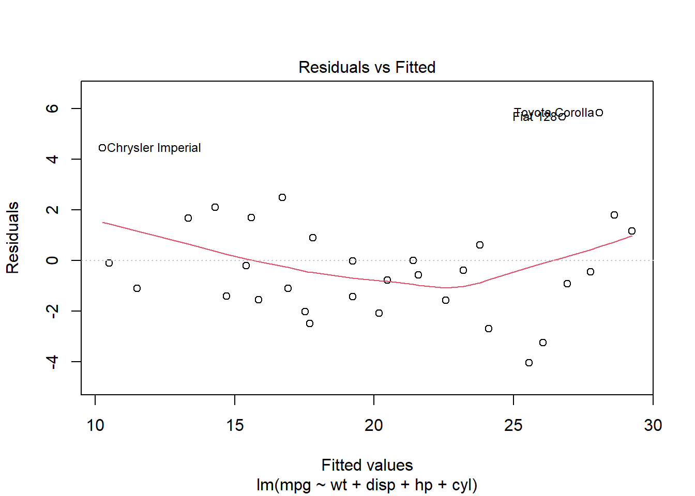
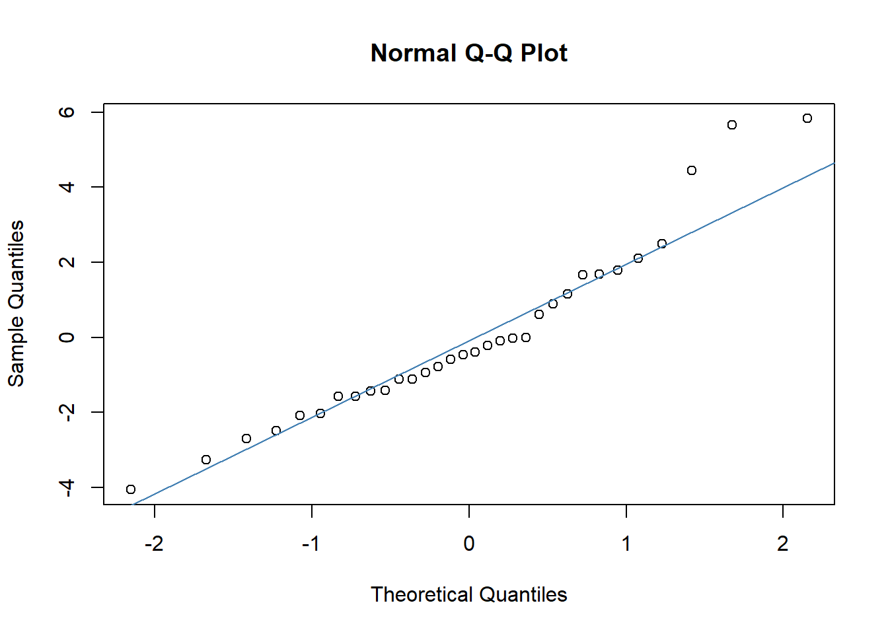
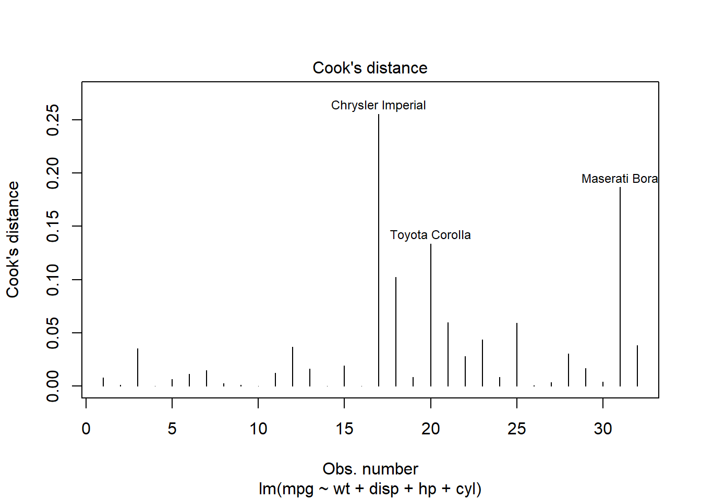
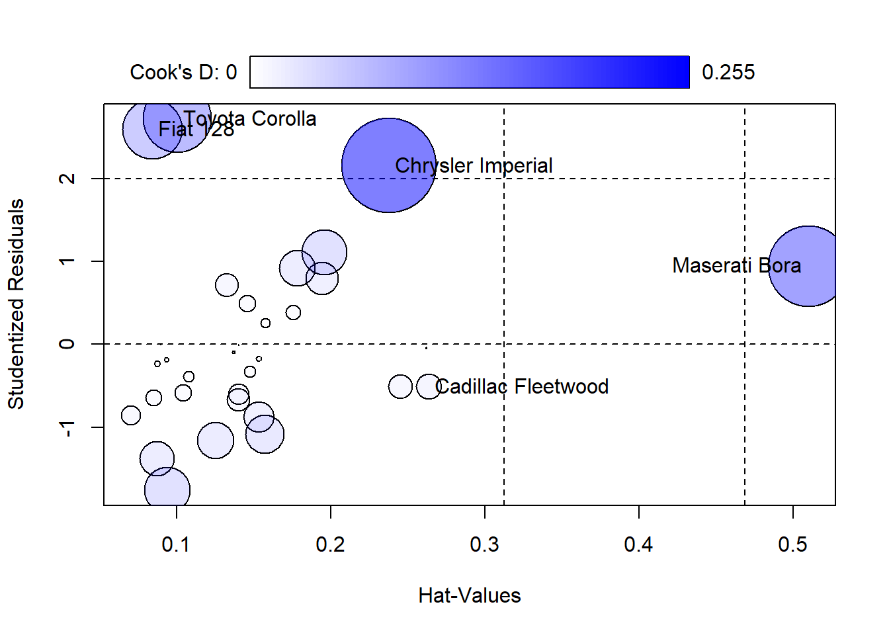

Chapter 7 Diagnosing Our Regression Model
Alright, now that we’ve fitted our regression models, it’s crucial not to just take them at face value. Let’s dig into some diagnostics to ensure our models are robust and reliable. We’ll cover a few key diagnostics that help us validate the assumptions underlying linear regression.
# Load the dataset
data(mtcars)
# Fitting Regression model
model <- lm(mpg ~ wt + disp + hp + cyl, data = mtcars)
summary(model)##
## Call:
## lm(formula = mpg ~ wt + disp + hp + cyl, data = mtcars)
##
## Residuals:
## Min 1Q Median 3Q Max
## -4.0562 -1.4636 -0.4281 1.2854 5.8269
##
## Coefficients:
## Estimate Std. Error t value Pr(>|t|)
## (Intercept) 40.82854 2.75747 14.807 1.76e-14 ***
## wt -3.85390 1.01547 -3.795 0.000759 ***
## disp 0.01160 0.01173 0.989 0.331386
## hp -0.02054 0.01215 -1.691 0.102379
## cyl -1.29332 0.65588 -1.972 0.058947 .
## ---
## Signif. codes: 0 '***' 0.001 '**' 0.01 '*' 0.05 '.' 0.1 ' ' 1
##
## Residual standard error: 2.513 on 27 degrees of freedom
## Multiple R-squared: 0.8486, Adjusted R-squared: 0.8262
## F-statistic: 37.84 on 4 and 27 DF, p-value: 1.061e-107.1 Residuals Analysis
Before we declare victory with our model, it’s crucial to take a deep dive into the residuals, those differences between what our model predicts and what we actually observe. Residuals tell us a lot about the adequacy of the model fit. They can reveal patterns that suggest improvements are necessary, such as adjusting for non-linearity, dealing with outliers, or correcting heteroscedasticity.
7.1.1 Why Focus on Residuals?
Residuals are the unexplained portion of the response variable by the predictors in the model. Ideally, these residuals should appear random and scattered without forming any identifiable patterns. Any pattern in the residuals suggests that the model is missing some aspect of the information, which is manifesting as a structure in the residuals.
7.1.2 Plotting Residuals Against Fitted Values
To visually inspect these issues, we plot residuals against fitted values. This plot helps identify several potential problems in the regression model:

7.1.3 What to Look For in the Plot
Randomness: Residuals should be randomly dispersed around the horizontal axis (zero line). If the residuals display a random scatter, it suggests that the model is appropriately capturing the data’s variability without systematic errors.
Patterns or Curves: If you notice any curvature or pattern, this might indicate non-linear relationships that the linear model is not capturing.
Funnel Shape: A spread that increases or decreases with the fitted values indicates heteroscedasticity. This condition suggests that the variance of the residuals is not constant, which can affect the reliability of the regression coefficients.
Outliers: Points that are far from the zero line might be outliers. These are cases where the model has significantly mispredicted, and they warrant further investigation.
7.1.4 Next Steps
Based on what the residual plot reveals, you might consider several actions to improve your model:
Transformations: Applying transformations to the dependent variable or predictors might resolve issues of non-linearity and heteroscedicity.
Adding Predictors: Sometimes, the presence of patterns in the residuals is due to important variables missing from the model.
Addressing Outliers: Investigating and possibly removing outliers, or using robust regression techniques that lessen the influence of outliers.
Effective diagnostic plotting of residuals allows us to identify and correct issues with our model. By ensuring our residuals don’t show any patterns, we enhance the robustness and predictive power of our analysis, ensuring that our model performs well not just theoretically but in practical applications as well.
7.2 Checking for Normality in Residuals
When it comes to regression analysis, verifying the assumption of normality in the residuals is not just a pedantic detail, it’s essential. Many of the statistical tests we rely on for interpreting our models, including t-tests for coefficients and overall model F-tests, assume that these residuals follow a normal distribution. This assumption underpins our ability to trust the p-values these tests produce. So, let’s make sure we’re building our conclusions on solid ground.
7.2.1 Why Normality?
In simple terms, if the residuals (the differences between observed values and those predicted by our model) show a normal distribution, it suggests that our model is capturing all the systematic information in the data, leaving only the “random noise” which, ideally, is normally distributed in well-behaved data.
7.2.2 Using a Q-Q Plot to Check Normality
One of the most straightforward tools for checking normality is the Quantile-Quantile (Q-Q) plot. This plot helps us visually compare the distribution of the residuals to a perfect normal distribution. Here’s how you can generate this plot:
qqnorm(resid(model))
qqline(resid(model), col = "steelblue") # Adds a reference line to guide the eye
7.2.3 Interpreting the Q-Q Plot
In the Q-Q plot, the x-axis displays the theoretical quantiles of the normal distribution, essentially what we would expect if the residuals were perfectly normal. The y-axis shows the actual quantiles of the residuals from our model.
What to Look For: Ideally, the points should form a straight line along the reference line provided by
qqline(). Deviations from this line indicate departures from normality:S-shaped curve: Indicates that the residuals have heavier tails than a normal distribution.
Bulging patterns: Suggest that the residuals are more peaked or flat than a normal distribution.
Outliers: Points that deviate significantly from the line can be individual cases where the model did not perform well.
7.2.4 What if Residuals Aren’t Normal?
If the residuals deviate significantly from normality, it might affect the validity of some of our inference statistics. Depending on the severity and the nature of the non-normality, you might consider:
Transforming variables: Sometimes, a transformation of the response variable can lead to improvements in the normality of the residuals.
Using different error structures: For instance, generalized linear models (GLMs) can accommodate a range of distributional assumptions beyond normality.
Robust regression techniques: These are less sensitive to deviations from normality and can provide reliable estimates even when this assumption is violated.
By ensuring that our residuals approximate normality, we fortify the foundation of our model’s inferential statistics, leading to more reliable and interpretable outcomes. So always take the time to check the Q-Q plot, it’s a simple yet powerful diagnostic tool in your statistical toolkit.
7.3 Influence Measures
In any dataset, certain observations can disproportionately affect the fit of a regression model. You might visualize these as data points that “grab onto” the regression line and exert a strong pull, thereby potentially skewing our analysis.
7.3.1 Cook’s Distance
One effective method for identifying these influential data points is by using Cook’s distance. This measure helps us quantify the effect of deleting a given observation. Observations with high Cook’s distance are particularly influential and could be distorting our predictive model significantly.
Here’s how you can generate a Cook’s distance plot:

7.3.2 Using influencePlot for Detailed Diagnostic
For a more detailed diagnostic analysis, the influencePlot function from the car package provides a comprehensive “bubble” plot. This plot visualizes the Studentized residuals against the leverage (hat values), with bubble sizes representing the Cook’s distances. This plot is particularly useful for simultaneously assessing leverage, influence, and residuals:
library(car)
# Create influence plot
influencePlot(model, scale=10,
xlab="Hat-Values", ylab="Studentized Residuals", id=TRUE,
fill=TRUE, fill.col=carPalette()[2], fill.alpha=0.5)
## StudRes Hat CookD
## Cadillac Fleetwood -0.5092918 0.26359434 0.01909245
## Chrysler Imperial 2.1551270 0.23781201 0.25536280
## Fiat 128 2.5945269 0.08415625 0.10204889
## Toyota Corolla 2.7194282 0.10044233 0.13352159
## Maserati Bora 0.9450482 0.50998500 0.186641677.3.3 Interpreting the Influence Plot
Horizontal Lines at -2, 0, and 2 on the Studentized residuals scale highlight significant residual values.
Vertical Lines at twice and three times the average hat value mark regions of high leverage.
Bubble Size: Larger bubbles indicate higher Cook’s distances, signifying greater influence on the regression model.
7.3.4 Actions to Take
Upon identifying observations with high Cook’s distances:
Investigate the Observations: Determine if these points are due to data errors, extreme values, or are legitimate but unusual observations.
Consider the Impact of Removal: Analyze how removing these points affects your model to decide if adjustments or a different modeling approach might be necessary.
By utilizing Cook’s distance and influence plots, you can ensure that your model’s predictions remain robust and are not overly influenced by a few data points. Regularly examining these diagnostics helps maintain the integrity of your statistical analysis and guides you toward more reliable interpretations.
7.4 Multicollinearity Check
When we build a model, we typically want our predictors to tell their own unique stories about the data. But what happens when they start telling the same story? This is known as multicollinearity, where predictors in a regression model are highly correlated. This excessive correlation can skew your results, making it difficult to determine the individual effect of each predictor.
7.4.1 Why Worry About Multicollinearity?
Multicollinearity doesn’t affect the model’s ability to predict the response variable; however, it does affect the precision of the estimated coefficients, which can lead to unreliable and unstable estimates of the effects. This instability means that small changes in the data could lead to large changes in the model coefficients.
7.4.2 Checking for Multicollinearity with VIF
To diagnose multicollinearity, we use the Variance Inflation Factor (VIF). It quantifies how much the variance of an estimated regression coefficient increases if your predictors are correlated. If no factors are correlated, the VIFs will all be 1.
Here’s how we check for multicollinearity in R:
## wt disp hp cyl
## 4.848016 10.373286 3.405983 6.7377077.4.3 Interpreting VIF Values
VIF Value 1: Indicates no correlation among the \(k^{th}\) predictor and the remaining predictor variables.
VIF Values between 1 and 5: Suggest moderate correlation, but they are often not concerning.
VIF Values above 5: Signal that the regression coefficients are poorly estimated due to substantial multicollinearity; some sources suggest a cutoff of 10, which indicates serious multicollinearity that needs to be addressed.
7.4.4 How to Address High VIFs
If you find a high VIF in your analysis:
Remove highly correlated predictors: Simplify the model by removing redundant variables.
Combine predictors: Sometimes, combining correlated variables into a single predictor can help.
Center the variables: Subtracting the mean can sometimes help reduce multicollinearity without losing any important information.
Understanding and managing multicollinearity is crucial for ensuring the validity of your regression analysis. By regularly checking VIF and taking corrective action when necessary, we can maintain the integrity and interpretability of our models, ensuring that each predictor contributes its unique piece of the story.
7.5 Autocorrelation Test
In the realm of time series analysis, one crucial assumption we often overlook is that of independence among residuals. When residuals are not independent, commonly seen as autocorrelation, it can lead to misleading inferences about the relationships in your data. This is because standard errors can become understated, leading to confidence intervals that are too narrow and p-values that falsely suggest significance.
7.5.1 What is Autocorrelation?
Autocorrelation occurs when the residuals from one time point are correlated with the residuals from another, which often happens in data collected over time. This can be due to trends, cyclic patterns, or other serial dependencies not captured by the model.
7.5.2 Testing Autocorrelation with Durbin-Watson
To detect the presence of autocorrelation, we employ the Durbin-Watson (DW) test. This test provides a statistic that quantifies the degree of serial correlation. Here’s how you can perform the DW test in R:
##
## Durbin-Watson test
##
## data: model
## DW = 1.685, p-value = 0.09982
## alternative hypothesis: true autocorrelation is greater than 07.5.3 Interpreting Durbin-Watson Statistic
DW Statistic Close to 2.0: Indicates no autocorrelation. The residuals from one period are not influenced by those from the previous periods.
DW Statistic Significantly Greater than 2.0: Suggests negative autocorrelation. This is less common but could indicate an overcorrection in your model.
DW Statistic Significantly Less than 2.0: Suggests positive autocorrelation. This is more usual and means that a positive error in one period likely leads to a positive error in the next.
7.5.4 Actions to Take if Autocorrelation is Detected
If you find evidence of autocorrelation:
Adding Lags: Incorporate lags of the dependent variable or residuals as additional predictors to capture the temporal dynamics.
Differencing: Apply differencing to the data series to remove trends or cycles that might be inducing autocorrelation.
Adjusting the Model: Consider using time series-specific models like ARIMA, which are designed to handle autocorrelation and non-stationarity within the data.
Autocorrelation can seriously skew the results of a time series analysis, but with the right tests and adjustments, you can ensure your model accurately reflects the true dynamics of the data. Always check for autocorrelation in time series models to avoid the pitfalls of correlated errors, keeping your conclusions both robust and reliable.
7.6 Wrap-Up
Performing these diagnostics doesn’t just safeguard the reliability of our conclusions; it deepens our understanding of the data’s underlying structures and behaviors. It’s like getting a peek behind the curtains of our statistical models, ensuring that what we see on the stage is truly reflective of the script. Let’s keep our analyses robust and our interpretations sharp!